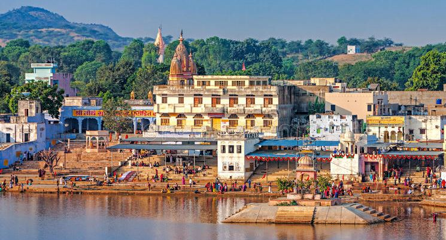
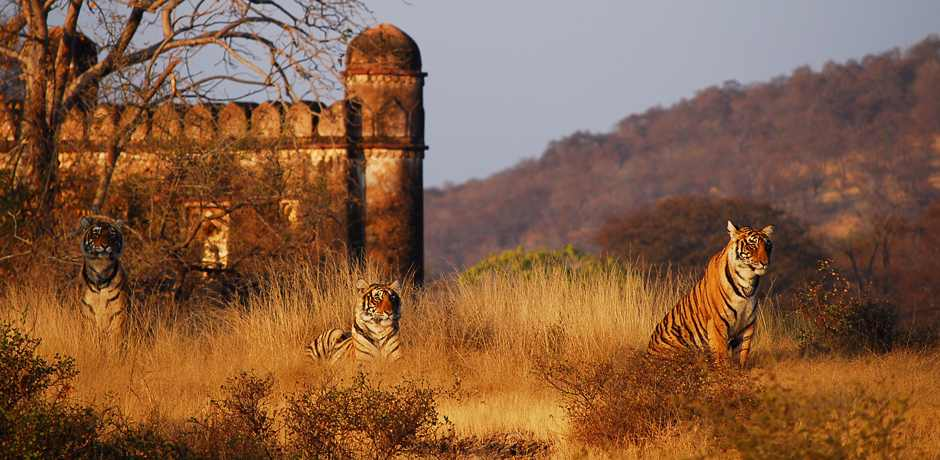
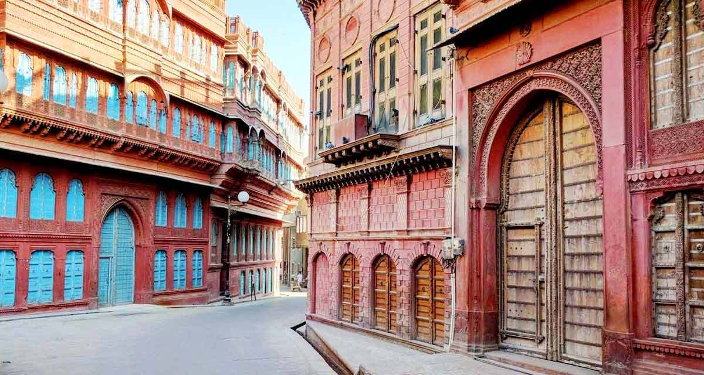

1. Jaisalmer
Also known as the Golden City, Jaisalmer is a remarkable city right on the fringes of the Thar Desert. The dominating features of
Jaisalmer is the Jaisalmer Fort, or Sonar Qila, which is still an inhabited space. Unlike virtually every other fort in India, Jaisalmer
is completely functioning, and within the fort you’ll find private residences, shops and even restaurants. Souvenir shopping within the
fort is a fun experience, with common souvenirs including bronze statues and silver jewelry. Within the fort’s walls, there are also a
handful of temples. These Jain temples date back to the 12th century, and most are open to the public in the morning.

2. Pushkar
Pushkar is a holy city, and it is known best for its Brahma temple and its annual camel fair. Brahma is one-third of the holy
trinity in Hindu religion, and Pushkar is said to be the home of Brahma. The Brahma temple in Pushkar is impossible to miss,
especially because of the frequent chanting ceremonies that take place several times a day. Pushkar is also home to several other
temples devoted to Vishnu, Savitri and Shiva. Every November, Pushkar comes alive with a camel fair and Hindu pilgrimage.

3. Ranthambhore
This national park is also a wildlife sanctuary, and it is known as one of the top spots in the entire world to see tigers
in the wild. You can book a wildlife safari to explore the park and see the animals up close. A smaller, open-top vehicle
called a gypsy is best for the braver visitors, and the larger open-top vehicles called canters offer a little more protection.
In addition to the tigers, Ranthambhore National Park boasts wildlife that includes leopards, hyenas, sloth bears and so much
more. On a safari, you will also have the chance to see Ranthambhore Fort, which dates back to the 10th century.

4. Bikaner
Although the city of Bikaner is home to a palace, a historic fort and even a camel research center, many Indians know
it as a destination for foodies with a sweet tooth. One of the local specialties you’ll definitely want to try is Kesar
Kulfi, a sweet and iced dessert that is delicious and refreshing on a hot afternoon. Desert safaris are also popular in
Bikaner, and you can ride a camel into the desert to explore the local culture and landscape. It is impossible to miss
Bikaner’s Junagarh Fort, built in the 16th century and now holding an extensive museum about the region.